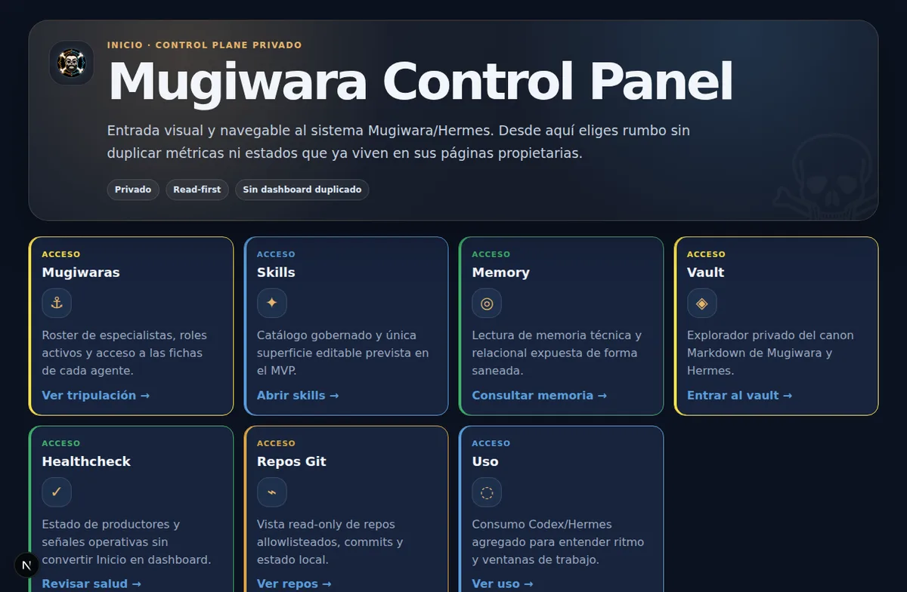
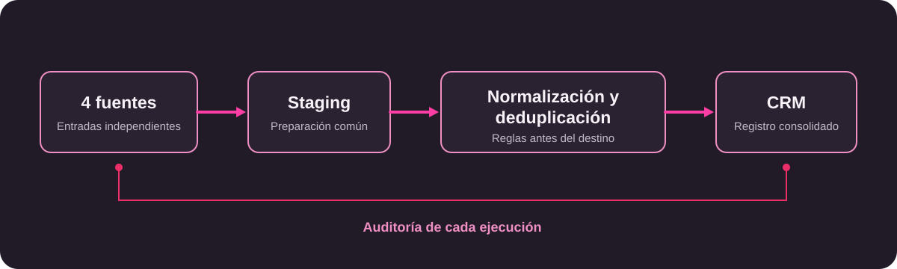
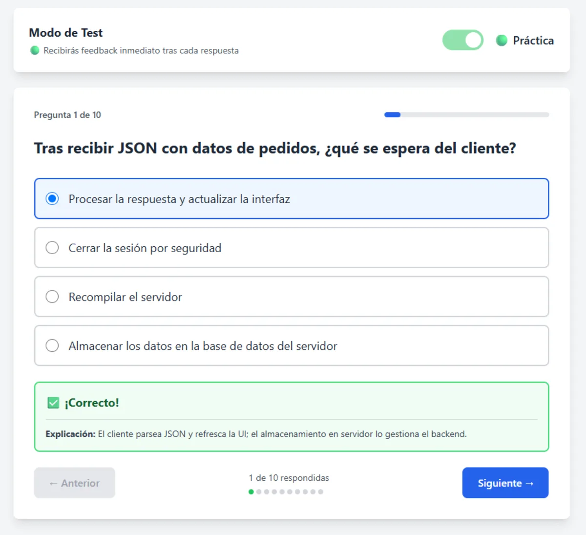

Herramientas internas
Software pensado para el equipo que lo usa y el proceso que necesita sostener.
Python · Automatización · Herramientas internas · IA aplicada
Soy Pablo Laya, desarrollador de software en Madrid, España. Combino experiencia en operaciones y datos con desarrollo de software para conectar herramientas, automatizar procesos y reducir trabajo manual. En Halltic desarrollo integraciones y herramientas internas; fuera del trabajo diseño y opero Mugiwara.
En qué aporto
Software pensado para el equipo que lo usa y el proceso que necesita sostener.
Conecto fuentes y reduzco pasos manuales con controles que se puedan revisar.
Normalizo, deduplico y dejo rastro de lo que ocurre para poder diagnosticarlo.
Asistentes, agentes y flujos con LLM cuando aportan una mejora concreta y supervisable.
Evidencia de trabajo
Proyectos
En los casos profesionales describo el trabajo sin publicar código ni información interna.
Aplicación: Next.js · FastAPI.
Operación: Linux · Docker · PostgreSQL · Redis · systemd · Tailscale.
Diseñé la arquitectura, los roles, la memoria, los permisos y los límites de exposición; además opero los servicios, la persistencia, los health checks y la recuperación del sistema.
La implementación está dirigida por IA; un equipo de agentes especializados apoya la documentación y la revisión.

El problema era incorporar datos de orígenes distintos sin perder trazabilidad ni repetir registros. Implementé adaptadores independientes, con staging y normalización antes de llegar al CRM.
La integración resuelve identificadores externos y URL canónicas para deduplicar, y registra cada ejecución para revisión. Puede ejecutarse manualmente o programada.

Implementé un circuito local para que RR. HH. prepare documentos y las personas los firmen con AutoFirma, DNIe o certificado. El backend y los controladores coordinan el flujo sin sacar la clave privada del dispositivo de firma.
Incluye permisos, estados, validación criptográfica local y firma PAdES.
Desarrollado como proyecto académico para automatizar un flujo real de detección y preparación de contenido técnico.
Selecciona conversaciones técnicas, las evalúa con LLM y prepara borradores de respuesta; Pydantic, SQLite y Docker ayudan a mantener el flujo repetible.
Los borradores llegan a Telegram antes de su publicación. La deduplicación y la entrega idempotente evitan repeticiones; no publica automáticamente y requiere revisión humana.
El README público documenta el resultado del repositorio: 396 tests pasando y 4 skipped, con pruebas unitarias, integración operativa, CI e infraestructura.
Herramienta de documentos por proyecto para empezar con carpetas y plantillas consistentes. La provisión es idempotente y puede reparar la estructura cuando hace falta.
Soporta carga y descarga con alcance definido, búsqueda, renombrado, movimiento, borrado, reemplazo y previsualización segura.
Al cerrar la jornada, comparé la asistencia con las horas reportadas para detectar excepciones y dejar una actividad para su revisión.
Construí recordatorios por Telegram con aplazamiento y reglas configurables. Cuando falta un horario aplicable, el sistema utiliza una jornada de respaldo configurada, crea una actividad para revisión, conserva el historial y evita duplicar avisos al responsable.
Diseñé un flujo de recogida y normalización de datos con identidad estable, reanudación y deduplicación para comparar ejecuciones de forma reproducible. El trabajo incluye planificación acotada y salidas trazables.
Producto full stack para practicar y examinarse: autenticación, estadísticas, ranking, práctica, examen y revisión de fallos.
Incluye un banco de preguntas documentado. El repositorio y la demo permiten revisar el proyecto.

Archivo de proyecto académico con catálogo de juegos, caché de FreeToGame, autenticación, biblioteca y administración.
Está construido con Flask, PostgreSQL, Jinja y Docker. La demo permite explorar el proyecto.
Trayectoria
julio 2026–actualidad
Desarrollador de software.
febrero–mayo 2026
Prácticas de desarrollo de software.
junio 2019–octubre 2025
Administrativo · automatización de procesos.
2026 · finalizado
2024–2026 · finalizado
en curso
Cómo trabajo
Hablamos